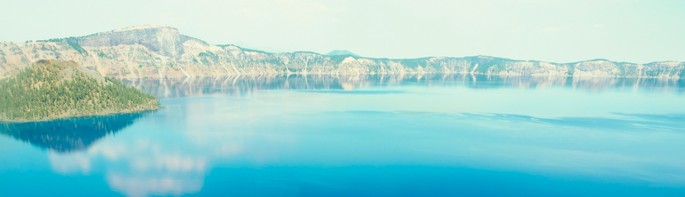

LinguistList: all things linguistics
Liverpool Philosophy: all things philosophy
Semantik: all things semantics
FoLLI: the Association for Language, Logic and Information
OA journals in linguistics (list maintained by my Konstanz colleague George Walkden)
Language Science Press: OA scholarly publisching house
Linguistics in OA: a non-profit that facilitates OA publishing in linguistics
LingBuzz: papers in linguistics
Rutgers Optimality Archive: work on optimality theory, mostly phonology
Semantics Archive: papers in semantics
PhilPapers: papers in philosophy
TROLLing: The Tromsø Repository of Language and Lingustics
Clarin-D: infrastructure for storing and archiving linguistic data
Center for Open Science: organization that creates several products that facilitate data management, project workflow and research collaboration
ESSLLI: European Summer School in Language, Logic and Information, courses on the interface between linguistics, logic and computation (annual, two weeks)
NASSLLI: North American Summer School on Logic, Language and Information, courses in logic, linguistics, computer science, cognitive science, and philosophy (biannual, one week)
LSA's summer institute: all core areas of linguistics, ranging from introductory to advanced (biannual, one month)
Creteling: Crete Summer School of Linguistics (annual)
Naxos Summer School on Diachronic Linguistics (annual)
NYI: The New York—Saint Petersburg Institute of Linguistics, Cognition and Culture (annual)
EGG: the Eastern Generative Grammar summer school (annual, two weeks)
Central European University's Summer University: a series of intensive classes in social sciences and humanities, including philosophy (Budapest, annual)
Summer School on Mathematical Philosophy for Female Students: Munich Center for Mathematical Philosophy (annual)
Hamburg Summer School in Philosophy (annual, one week)
Cologne Summer School in Philosophy (annual, one week)
Is this a good time for formal semantics? (a short video interview with Barbara Partee)
Introduction to Semantics and Pragmatics: online class by Chris Potts, including readings, assignments and YouTube videos
40 classic readings in formal semantics and pragmatics (by Frank Veltman)
Lambda calculator: a tool to practice derivations in lambda calculus
PennController: a toolkit for online collection of experimental data in linguistics (and not only)
Stanford Encyclopedia of Philosophy: a classic starting point for any inquiries about philosophical matters
Ethnologue: comprehensive information about each language and language family
EWAVE: the Electronic World Atlas of the Varieties of English
SSWL: Syntactic Structures of the World's languages database, gathered from work with native speakers
WALS: the World Atlas of Language Structures, gathered from descriptive materials
Maps
Tools for fieldwork: a collection of resources for linguistic fieldwork, inlcuding questionnaires, storyboards and glossing rules
other typological databases and resources, including freely available grammars
The Aphranaph project: an online resource for resource on African languages, initially on anaphora
Lingthusiasm: all things lingustics, for everyone
Accentricity: issues related to language and identity
The Vocal Fries: linguistic discrimination
The Allusionist: English language, lexicon, etymology; check out this review on the Guardian
Philosophy Bites: all things philosophy, mostly for an academic listener
Philosophy takes on the news
Public Philosophy: the series intended to engage a wider audience beyond academia
100+ list of philsoophy-themed podcasts from Daily Nous
What is linguistics: from the Linguistic Society of America
Miracles of Human Language: a free online introduction to linguistics (Coursera also offers an optional certificate for a fee, but the class is free otherwise)
Gretchen McCulloch "Because Internet": a popular book about how the language is changing (a review on the New York Times)
What Trump's speech may reveal about his democratic committments (Washington Post)
7 things you should know about sign language (Mental Floss)
Why do cartoon villains speak in foreign accents? (The Atlantic)
Do you speak American?: Public Broadcasting Service on various linguistic issues, such as stereotypes associated with language in their prestige & predjudice articles, where they debunk myths about women's speech or bad language
Agora: a market place of ideas; the New Statesman's philosophy column
Black Lives Matter: a philosophy of language take on the slogan (Slate)
a collection of essays on the value of philosophy (Daily Nous)
Ian Olasov "Ask a philosopher": a popular book on philosophical underpinnings of even the most mundane questions
Philosophy Matters: a popular introduction, book-long
An annotated bibliography on gender bias in academia
LSA's committee on the status of women in linguistics
Gender distribution in linguistic subfields, journals, job searches (maintained by Ora Matushansky)
Bias in linguistics
Resources for, and about, women in philosophy (why so few, for example)
the Alps
Oregon and Washington
Colorado
Yosemite
Alaska
non-mountains
a photo-tribute to UCLA, my grad school alma mater
portraits
self-portraits
BackpackingLight
Alan Dixon
Christy Rosander
Erin "Wired" Saver
Andrew Skurka
Philip Werner
mailing lists
open access and open science
The Open Access movement is gaining momentum in linguistics, its ultimate goal being to provide access to published research to everyone regardless of their institutional affiliation.online repositories for papers and data
Free online repositories promote early research dissemination.summer schools
general resources
cross-linguistic resources and tools
podcasts
for non-specialists
bias (gender and otherwise)
personal
There is a tendency in academia to pigeonhole people as having just one identity, which is wrong on many levels. Besides being a linguist, I am also a photographer and an outdoor addict, as the footage below shows. I love human-propelled travel in many forms, ideally in the Alps or out West.
lightweight backpacking
Long-distance hiking is my absolute passion, and here are some resources that can get one started and hopefully help to avoid some newbie mistakes: gear lists, recommendations, how-to's, trip reports and the general philosophy of being safe in the outdoors with less. If you've never backpacked, start here. Happy trails!